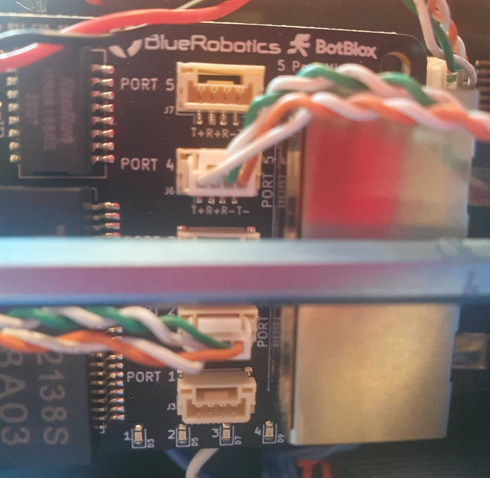
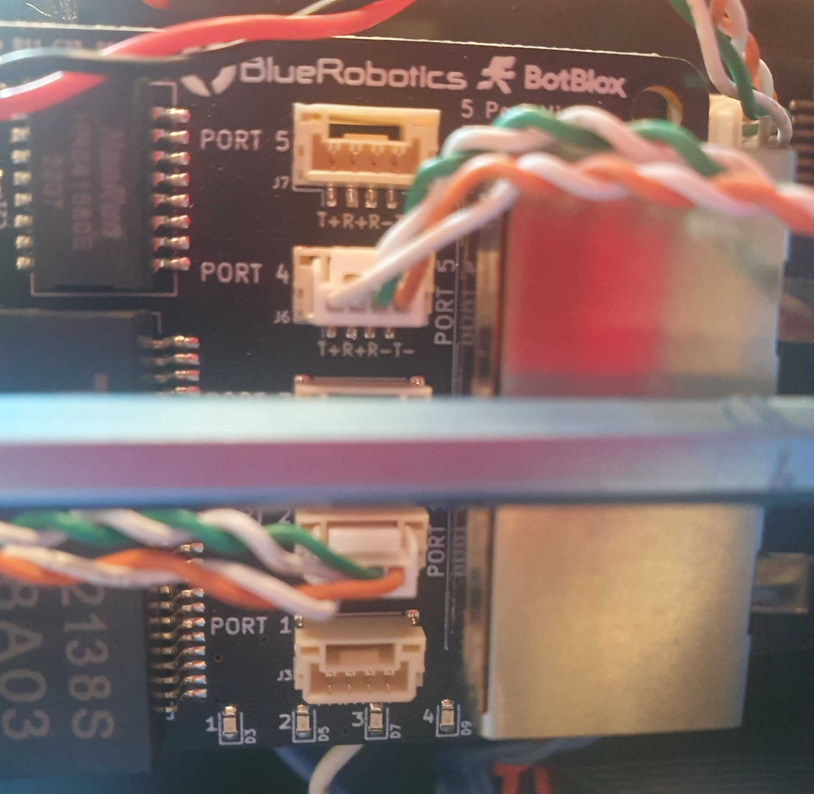

Integrating onto BlueROV2🔗
Introduction🔗
This is a manual on how to install the Water Linked Sonar 3D-15 for the BlueROV2. Documentation and information about the BlueROV2 can be found at:

What's in the box🔗
The Sonar 3D-15 from Water Linked is normally shipped with an attached I/O Interface board.

Prerequisites🔗
Before starting the integration, ensure you have all the necessary tools and parts ready.
Tools Required🔗
- Soldering iron and solder
- Wire strippers / cutters
- Heat gun or lighter (for heat shrink)
- Small flathead screwdriver
- Hex key set (for opening ROV and mounting)
Parts Required🔗
- BlueROV2 Roof Rack: To mount the sonar.
- Sonar Mount: Custom mount for Sonar 3D-15.
- Download the example 3D step file
- Mounting Screws:
- 4x M4 screws (length depends on mount thickness) for Sonar-to-Mount.
- 4x M4 screws + nuts + washers for Mount-to-ROV.
- Connectors:
- 2x Spade connectors (or ring terminals) for power.
- 1x JST 4-pin connector (GH type usually used with BlueROV2 devices, verify pitch).
- WetLink Penetrator 6.5mm (Low Compression): For passing cable into the enclosure.
- Ethernet Switch:
- Must be installed in the BlueROV2. See Ethernet Switch Installation Guide.
1. Prepare the Connectors🔗
Testing the Sonar 3D-15 Separately
If the I/O Interface board is attached, the Sonar 3D-15 can be tested directly using an Ethernet cable and a power supply. If you wish to test the device on its own before integration, follow the general Quickstart tutorial, available here: Quickstart.
Connecting to the BlueROV2
To connect the Sonar 3D-15 to the BlueROV2, you have to attach connectors to each of the wires from the Sonar 3D-15. You have to make the final cable assembly resemble the images below - with the cable towards the Sonar 3D-15 on the left and their JST connectors for the BlueROV2 on the right.


The installation procedure for the Sonar 3D-15 is very similar to the Water Linked DVL installation, which BlueRobotics has an excellent guide for. We recommend reviewing this guide before proceeding. It can be found here:
DVL Installation Guide for BlueROV2
For the remainder of this Sonar 3D-15 guide, we assume you are familiar with the BlueROV2 and its installation procedures.
To install the Sonar 3D-15 for the BlueROV2, perform the following procedure:
-
Remove the I/O board. Measure out the required length outside the ROV. Then cut the Sonar cable to that length plus approximately 30cm for inside the ROV.
After this step, the I/O board is no longer needed for normal operation. The cables from the Sonar 3D-15 are shown in the picture below.

Warning
The Sonar 3D-15 cable is permanently attached and non-replaceable inside the Sonar 3D-15 If you cut the cable too short you will either have to splice the cable with another cable, or order a new Sonar 3D-15. Measure twice, cut once!
-
Assemble a waterproof WetLink 6.5 LC Penetrator according to the BlueRobotics guide. It can be found here: WetLink Installation Guide from Blue Robotics
-
Identify the different cables from the Sonar 3D-15. Make sure to correctly identify the different white signal cables. Differentiate between white/green (RX+) and white/orange (TX+).
Sonar Cable Type Sonar Cable Color DC- Black DC+ Red RX+ Green/White RX- Green TX+ Orange/White TX- Orange -
Solder the spade connectors onto the black and red power cables.

-
Terminate a JST 4-pin connector to the four remaining cables. The order is:
Pin Order Wire Color Sonar Cable Type 1 Green/White RX+ 2 Orange/White TX+ 3 Green RX- 4 Orange TX- 

Make the cables from the Sonar 3D-15 look similar to the following:

-
Install the WetLink Penetrator into the end cap of the watertight enclosure. See the Installing The Penetrator chapter on Blue Robotics' DVL installation guide for proper penetrator installation: DVL Installation Guide for BlueROV2.
-
Connect the JST connector to the Ethernet Switch board on the BlueROV2. Use port 2, 3, or 4 for the JST connector, as port 5 and 1 are occupied.
 
 -
Connect the power spade connectors of the Sonar 3D-15 cables to the power terminal blocks on the BlueROV2. Connect the black power wire to an available space on the terminal block with the other black wires. Connect the red power wire to and available space on the terminal block with the other red wires.
-
Seal and waterproof the connection and BlueROV2 by closing end cap of the watertight enclosure properly.
2. Mount the Sonar🔗
Proper mounting is critical for accurate sonar performance.
Recommended Mounting Procedure🔗
-
Prepare the Mount If you haven't already, print or machine the mount.
Note
Choose a material (like PETG or ABS) that can withstand the marine environment.
-
Attach Sonar to Mount Secure the Sonar 3D-15 to the mount using 4x M4 screws.
- Length =
5.0mm + Mount Thickness(e.g., 8mm screws for a 3mm mount).

Warning
Do not use screws that are too long. They will penetrate the casing and permanently damage the sonar electronics.

- Length =
-
Attach Assembly to ROV Mount the assembly to the BlueROV2 Roof Rack, preferably at the front to ensure a clear field of view.
- Use 4x M4 screws, nuts, and washers.


3. Configure Software & Network🔗
Step 1: Prepare the ROV🔗
Power on the BlueROV2 and ensure it is connected to your computer. - Follow the BlueROV2 Software Setup if needed. - Verify: The Sonar 3D-15 should show a green light, indicating it is powered.
Step 2: Install BlueOS Extension (Recommended)🔗
The easiest way to connect is using the Sonar 3D-15 extension.
- Open the BlueOS extension manager.
- Search for and install Sonar 3D-15 extension.

- Click the extension to open it. It will automatically detect the Sonar IP. Take note of the IP address displayed at the top of this screen as you will require this for Step 3 below

Step 3: Configure Cockpit🔗
We recommend using Cockpit for the best experience.
- Open Cockpit and click the collapse handle on the left.

- Click Edit Interface.

- Drag an IFrame box onto your layout.

- Click the settings icon for the IFrame.

- Enter the Sonar IP Address:
- Use the IP address displayed in the Extension (Step 2), e.g.,
http://192.168.2.172. - Press Enter.

- Use the IP address displayed in the Extension (Step 2), e.g.,
Step 4: Deploy & Validate🔗
- Submerge: Place the ROV in water.

-
Enable Acoustics: In the Sonar GUI (now visible in Cockpit), click the green "Enable Acoustics" button.
Warning
Never enable acoustics in air. Only enable when submerged to prevent overheating.

Success! You are now ready to use the Sonar 3D-15.
Troubleshooting & Advanced🔗
How to find the IP Address Manually
If the extension does not work, you can find the IP manually.
- Identify your computer's IP on the BlueROV network (
ip aon Linux,ipconfigon Windows). - Scan the network using
nmap:sh nmap -sn 192.168.2.*(Adjust the subnet to match your BlueROV network) - Try recognized IPs in a browser until the Sonar GUI loads.
- Common subnets:
192.168.2.x - Fallback IP:
192.168.194.96See quickstart for details.
- Common subnets: